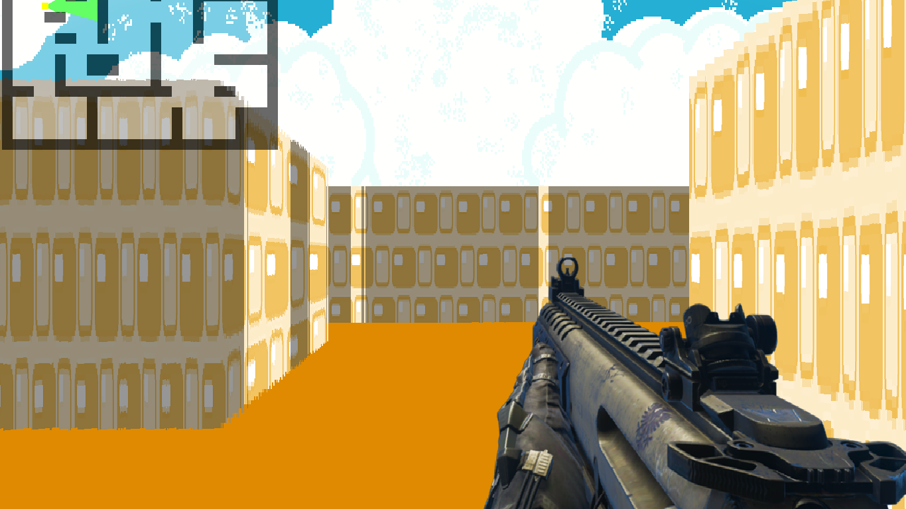

Features
Main key features of the Maze Poject
User Friendly
Very easy to navigate around the maze:


Map
Navigate through the maze using the map at the top left corner. The map shows how the RayCasting work, a method used when makig games to get the closest block form the player.
HowTo
git clone https://github.com/mamebb2023/Maze-Project
Edit the include location
Edit the lib location
Copy the 'SDL2.dll' to the current working directory
About
Buliding this project was a great challenge. Starting from configuring SDL2 on my local computer, to learning about SDL2 and RayCasting.
Me?
My name is Mohammednur Seid and I am currently studying Software Engineering at Holberton School through there online platform ALX Africa.
I am enthusiast learner and I like to code as much as I like chocolate